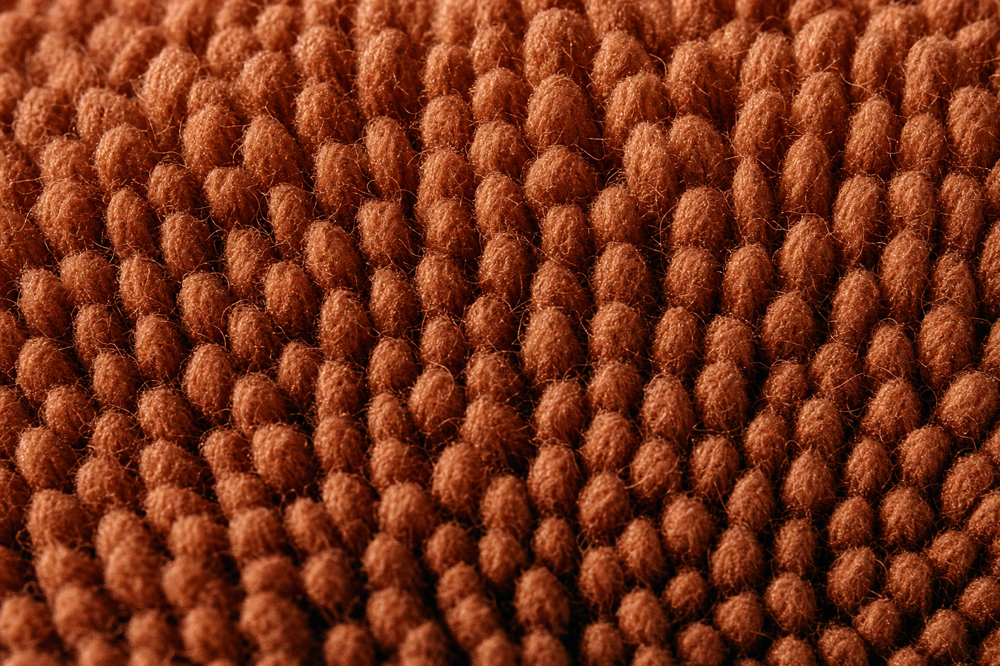

Module 01 · Foundations
Before you thread a needle, you need to understand what a punched loop actually is — because every technique choice, every troubleshooting fix, and every material decision downstream is a consequence of this one physical mechanism.
Lesson 1.1 — The anatomy of a punched loop
A punch needle is a hollow tube with an eye near the sharp tip and a channel running down its side. You thread yarn through the shaft, out through the eye, and leave a tail hanging. Then you push the whole needle straight down through a taut backing fabric until the handle touches the surface — and pull it back up just far enough that the tip stays grazing the cloth.
What actually happens on the other side: as the needle descends, it carries a long length of yarn through the weave. As it retracts, friction between the yarn and the fabric holds the far end in place while the near end is pulled back, folding the yarn into a loop on the far side. Move a couple of millimeters, punch again. The next stitch holds the previous loop's neighbor in place.
You are not drawing on the fabric. You are pushing a folded end of yarn through it, and the surrounding weave is what holds every loop in place.
Because the loops form on the opposite side from where you're working, you always punch on the reverse of what will be the "public" side of the rug. Whatever you draw on the fabric is a mirror image of the finished piece. Left is right. Text is backwards. This isn't a stylistic quirk — it's a direct consequence of how the tool works.
Two immediate consequences
- Fabric weave has to be open enough to let the needle pass but tight enough to grip the yarn. Too loose (burlap) and loops slide out. Too tight (regular quilting cotton) and the needle can't get through — or it does, ripping fibers. This is why monks cloth exists.
- Every loop's stability depends partly on its neighbors. Loops packed tightly together support each other; a single isolated stitch is much easier to pull. This will matter enormously when you start planning outlines and fill.

Lesson 1.2 — Punch needle vs. rug hooking vs. tufting
These three techniques get confused constantly, including in tutorials. All three produce loop pile. All three use a similar backing fabric family. But the mechanics — and what your body is doing — are completely different.
| Technique | Loop is formed by | You work on | Speed | Best for |
|---|---|---|---|---|
| Punch needle | Pushing yarn through from the back | The back (reverse) side | Slow, meditative | Small-to-medium pieces, detailed color work, quiet spaces |
| Rug hooking | Pulling yarn or wool strips up from underneath | The front side | Slow | Traditional wool-strip work, painterly shading |
| Rug tufting (gun) | Powered machine drives yarn through | The back side | Very fast | Large rugs, cut-pile finishes, production work |
The key mental shift when moving from tufting to punch needle: everything you'd do with the gun in three seconds takes you thirty. That's not a defect — it's a different craft. Punch needle rewards patience with detail that a tufting gun can't touch. See Tufting Crossover for the full comparison if you're coming from an AK-I or Duo.
Lesson 1.3 — Why fabric tension is the whole game
If you take one thing from this module, take this: the single most common cause of "my loops keep pulling out" is that the fabric isn't drum-tight. Not merely stretched. Drum-tight. When you flick it with a finger, it should sound like a low percussion note.
Here's why. When the needle punches down, it carries yarn through the weave. As it retracts, two forces are in play: friction between the yarn and the surrounding fibers holds the loop; and the fabric, snapping back into place around the yarn, tightens the grip. If the fabric is loose, it doesn't snap back — it just sags away from the yarn, and the loop slides straight out.
Beginners often set up their frame, punch for ten minutes, and never re-check tension. Fabric slackens as you work. Get in the habit of tightening every 15–20 minutes on a gripper frame, or every time you re-position an embroidery hoop.
Everything in Module 02 (choosing the right frame) and Module 03 (mounting the fabric) is downstream of this one requirement. If you internalize drum-tight or nothing, half of your future troubleshooting is already solved.
A slack rug punches a soggy loop. A tight rug punches a loop that stays for a decade.